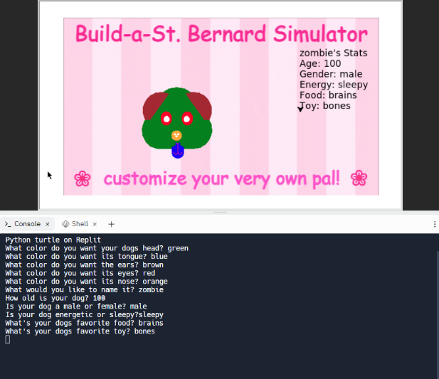
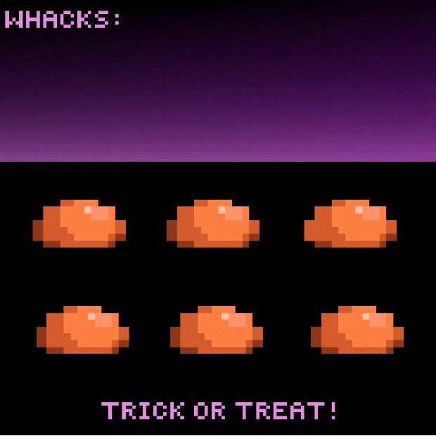
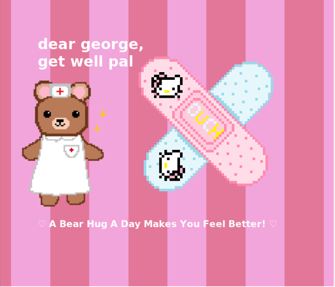
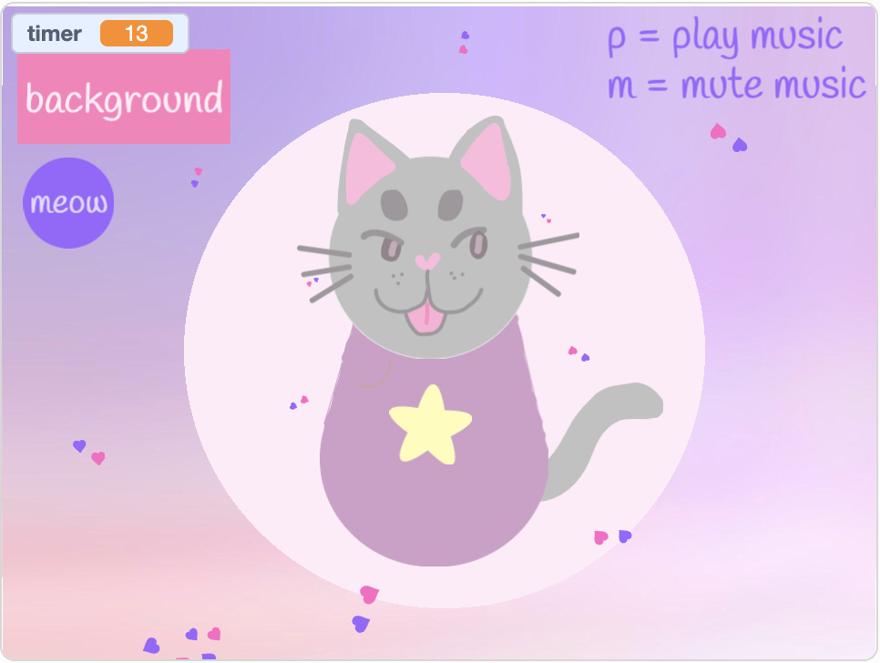

Home
Portfolio
About Me
This is my Portfolio Page!
1.1.9: Build-a-dog Simulator

In this game, users are given the ability to customize their very own dog using colors and specifics. The program runs through and asks what color the user want to set for each facial feature of the dog. The game also plays a song in the background to keep the users entertianed as they are building the dog.
1.2.5: Whack-A-Minion

Whack-A-Minion is relatively similar to whack a mole, this is a fun halloween themed minion clicking game where we have 6 holes and in each hole a different minion appears each time. For each whack, the user earns a point and there is a restricted amount of time that the user can get whacks on. There is also a fun background music playing while the user plays, and at the end if the user beats the high scores, their name will be recorded on a leaderboard.
1.3.1: Cuddly Bear

In this game, a user gets to customize their very own card for children in the children's hospital. There is a fun friendly song playing in the background, and the user is asked to enter the child's name including a message that they want to deliever to the child. Then the user is given an option of picking a bandaid or a pill bottle as a decoration. The bear also is animated and moves around the background back and forth.
Scratch Project: Build a Kitty

In this mini-game the user has the option to mute/play background music by clicking certain keys on the keyboard. Additonally, they can make their cat meow using buttons and change the background as well. By clicking on the different body parts of the cat, including the decor, they are also able to customize the cat. While all of this is happening, there are going to be little hearts falling from the top of the screen and collecting at the bottom like a snowglobe.